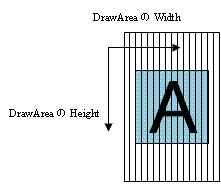
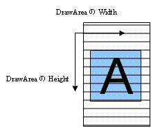

com.docomostar.opt.ui.stereoscope.StereoScope
com.docomostar.opt.ui.stereoscope.StereoScope
|
|||||||||
| 前のクラス 次のクラス | フレームあり フレームなし | ||||||||
| 概要: 入れ子 | フィールド | コンストラクタ | メソッド | 詳細: フィールド | コンストラクタ | メソッド | ||||||||
Object
public final class StereoScope
ステレオ表示を制御するためのクラスを定義します。
StereoscopicCanvas を使用せずに、
Stereoscopicable を実装した Canvas を使用する場合に、
isEnabled()、setEnabled(boolean)、setStereoscopicStyle(int)
によって、ステレオ表示機能の有効/無効を制御できます。
getParallaxOffset(int) と getResolutionRate() は、
StereoscopicCanvas によってステレオ表示の描画を行う以下の場合において、
必要に応じて視差オフセットを取得するためにも使用します。
| フィールドの概要 | |
|---|---|
static int |
STEREOSCOPIC_DEPTH_MAX
ステレオ表示の奥行きとして指定できる最大値です(=9)。 |
static int |
STEREOSCOPIC_DEPTH_MIN
ステレオ表示の奥行きとして指定できる最小値です(=-9)。 |
static int |
STEREOSCOPIC_STYLE_HORIZONTAL
ステレオ表示が Canvas に対して横方向であることを表します(=1)。 |
static int |
STEREOSCOPIC_STYLE_VERTICAL
ステレオ表示が Canvas に対して縦方向であることを表します(=0)。 |
| メソッドの概要 | |
|---|---|
static int[] |
getAvailableStyle()
このクラスで定義されている表示スタイルのうち、 このアプリで利用可能な表示スタイルの値を含む配列を返します。 |
static int |
getMaxIntensityLevel()
端末のサブメニューの立体視強度で設定可能な段階の最大値を取得します。 |
static int |
getParallaxOffset(int depth)
ステレオ表示の奥行きを示す値から、視差オフセットの値を取得します。 |
static int |
getResolutionRate()
解像度比を取得します。 |
static int |
getStereoscopicIntensity()
このアプリに設定されている立体視強度を取得します。 |
static int |
getStereoscopicStyle()
ステレオ表示を有効にする場合の表示スタイル設定を取得します。 |
static boolean |
isEnabled()
ステレオ表示設定を取得します。 |
static void |
setEnabled(boolean b)
ステレオ表示の有効/無効を設定します。 |
static void |
setStereoscopicIntensity(int level)
立体視強度を設定します。 |
static void |
setStereoscopicStyle(int style)
ステレオ表示状態を有効にする場合の表示スタイルを設定します。 |
| クラス Object から継承されたメソッド |
|---|
equals, getClass, hashCode, notify, notifyAll, toString, wait, wait, wait |
| フィールドの詳細 |
|---|
public static final int STEREOSCOPIC_DEPTH_MAX
ステレオ表示の奥行きとして指定できる最大値です(=9)。 一番手前であることを表します。
getParallaxOffset(int),
定数フィールド値public static final int STEREOSCOPIC_DEPTH_MIN
ステレオ表示の奥行きとして指定できる最小値です(=-9)。 一番奥であることを表します。
getParallaxOffset(int),
定数フィールド値public static final int STEREOSCOPIC_STYLE_VERTICAL
ステレオ表示が Canvas に対して縦方向であることを表します(=0)。

setStereoscopicStyle(int),
getStereoscopicStyle(),
定数フィールド値public static final int STEREOSCOPIC_STYLE_HORIZONTAL
ステレオ表示が Canvas に対して横方向であることを表します(=1)。

setStereoscopicStyle(int),
getStereoscopicStyle(),
定数フィールド値| メソッドの詳細 |
|---|
public static int getParallaxOffset(int depth)
ステレオ表示の奥行きを示す値から、視差オフセットの値を取得します。
引数 depth に STEREOSCOPIC_DEPTH_MIN から STEREOSCOPIC_DEPTH_MAX
までの値を指定することにより、奥行きに応じた視差オフセットを取得できます。
視差オフセットの値は、奥行き(z軸)の値から一意に決定します。x軸、y軸の座標値により このオフセット値が変化することはありません。また、右目用、左目用のオフセット値は、 正負の符号が異なるだけで同じ値になります。
ただし、以下の場合は同じ奥行きを指定しても、通常とは異なる視差オフセット値を返します。
本メソッドは、StereoscopicCanvas によってステレオ表示の描画を行う以下の場合、
必要に応じて視差オフセットを取得するために使用します。
StereoscopicCanvas(false)
で生成されたステレオ表示用キャンバスオブジェクトを使用する場合は、このメソッドで取得した値に、
解像度比を除算することで解像度を加味した値を得ることができます。
また、StereoscopicCanvas を使用せず setEnabled(boolean) でステレオ表示を有効にして、
Canvas でステレオ表示する場合についても、
このメソッドから返される値を参考にして描画することを推奨します。
depth - ステレオ表示の奥行きを指定します。
STEREOSCOPIC_DEPTH_MAX,
STEREOSCOPIC_DEPTH_MIN
com.docomostar.lang.UnsupportedOperationException -
IllegalArgumentException -
public static void setEnabled(boolean b)
ステレオ表示の有効/無効を設定します。デフォルトではステレオ表示設定は無効になっています。
このメソッドでステレオ表示設定を有効にすると、ステレオ表示状態が有効になります。 このメソッドでステレオ表示設定を無効にすると、ステレオ表示状態が無効になります。
Stereoscopicable を実装した Canvas にステレオ表示用の描画を行い、
ネイティブの視差バリアを有効にすることでステレオ表示を行う場合に使用します。
StereoscopicCanvas によるステレオ表示と、このメソッドによるステレオ表示は独立しています。
StereoscopicCanvas がカレントになるとステレオ表示状態は有効になりますが、
このメソッドによるステレオ表示設定には影響を与えません。
また、StereoscopicCanvas によるステレオ表示中に、
このメソッドによるステレオ表示設定は、ステレオ表示状態に影響を与えません。
このメソッドによってステレオ表示状態を有効にした場合、 以下のいずれかの条件が発生した時、ステレオ表示状態が無効になります。
Dialog.show() の呼び出し
上記条件でステレオ表示状態が無効になった場合、 以下で再度 ステレオ表示状態が有効になります。
Dialog.show() の復帰
b - ステレオ表示設定を有効にする場合は true を、無効にする場合は false を設定します。isEnabled(),
setStereoscopicStyle(int),
getStereoscopicStyle()
com.docomostar.lang.UnsupportedOperationException -
public static boolean isEnabled()
ステレオ表示設定を取得します。
カレントフレームが StereoscopicCanvas であるか否かに影響されることなく、
直前の setEnabled(boolean) で設定された値を返します。
サスペンドメソッド以外によるサスペンドや画面占有等で、ステレオ表示状態が無効になっている場合であっても、
直前のsetEnabled(boolean)で設定された値を返します。
setEnabled(boolean b),
setStereoscopicStyle(int),
getStereoscopicStyle()
com.docomostar.lang.UnsupportedOperationException -
public static void setStereoscopicStyle(int style)
ステレオ表示状態を有効にする場合の表示スタイルを設定します。
このアプリにおいてSTEREOSCOPIC_STYLE_VERTICAL および STEREOSCOPIC_STYLE_HORIZONTAL
が利用可能である場合、デフォルトの表示スタイルは STEREOSCOPIC_STYLE_VERTICAL です。
このメソッドで STEREOSCOPIC_STYLE_VERTICAL に設定すると、ステレオ表示が縦方向で有効になります。
このメソッドで STEREOSCOPIC_STYLE_HORIZONTAL に設定すると、ステレオ表示が横方向で有効になります。
このメソッドで設定した表示スタイルは、以下のタイミングでステレオ表示に反映されます。
StereoscopicCanvas がカレントになるとステレオ表示状態は有効になりますが、
このメソッドによる表示スタイル設定には影響を与えません。
また、StereoscopicCanvas によるステレオ表示中に、
このメソッドによる表示スタイル設定は、ステレオ表示に影響を与えません。
引数 style に getAvailableStyle() で返された値のいずれかを設定します。
これ以外の値を設定した場合は不正な値として扱われ例外が発生します。
style - ステレオ表示を有効にする場合の表示スタイルを設定します。STEREOSCOPIC_STYLE_VERTICAL,
STEREOSCOPIC_STYLE_HORIZONTAL,
setEnabled(boolean),
getStereoscopicStyle()
com.docomostar.lang.UnsupportedOperationException -
IllegalArgumentException -
public static int getStereoscopicStyle()
ステレオ表示を有効にする場合の表示スタイル設定を取得します。
カレントフレームが StereoscopicCanvas であるか否かに影響されることなく、
直前の setStereoscopicStyle(int) で設定された値を返します。
STEREOSCOPIC_STYLE_VERTICAL,
STEREOSCOPIC_STYLE_HORIZONTAL,
setEnabled(boolean),
setStereoscopicStyle(int)
com.docomostar.lang.UnsupportedOperationException -
public static int[] getAvailableStyle()
STEREOSCOPIC_STYLE_VERTICAL,
STEREOSCOPIC_STYLE_HORIZONTAL
com.docomostar.lang.UnsupportedOperationException -
public static int getResolutionRate()
解像度比を取得します。
平面表示時とステレオ表示時のディスプレイ解像度比を返します。
解像度比 = 平面表示時のディスプレイ解像度 / ステレオ表示時のディスプレイ解像度
StereoscopicCanvas
com.docomostar.lang.UnsupportedOperationException -
public static int getMaxIntensityLevel()
このメソッドで取得する値は、立体視強度の段階として常に標準になります。
com.docomostar.lang.UnsupportedOperationException -
public static int getStereoscopicIntensity()
このアプリ起動時に設定されている立体視強度は、 端末のサブメニューの立体視強度の設定値です。
com.docomostar.lang.UnsupportedOperationException -
public static void setStereoscopicIntensity(int level)
このアプリ起動時に設定されている立体視強度は、 端末のサブメニューの立体視強度の設定値です。
このアプリで設定した立体視強度は、 端末のサブメニューの立体視強度の設定に影響を与えません。
引数 level に 0 から getMaxIntensityLevel() までの値を指定します。
この範囲以外の値が指定されて場合には、不正な値として例外が発生します。
なお、0 は 端末のサブメニューの立体視強度の設定の「視差強度無し」、
getMaxIntensityLevel() は「視差強度標準」であることが保障されています。
視差強度は昇順に強くなります。
このメソッドで立体視強度を設定に応じて
getParallaxOffset(int) で取得する視差オフセットも変更されます。
描画の途中から立体視強度を変更した場合には、
getParallaxOffset(int) を取得し、
視差オフセットにあった画像を再作成する必要があります。
StereoscopicCanvas による 2D 描画の簡単描画方式においても、
奥行きに対応する視差オフセットが変更されるため、
描画の途中から立体視強度を変更した場合には、画像を再作成する必要があります。
level - 立体視強度を指定します。
com.docomostar.lang.UnsupportedOperationException -
IllegalArgumentException -
|
|||||||||
| 前のクラス 次のクラス | フレームあり フレームなし | ||||||||
| 概要: 入れ子 | フィールド | コンストラクタ | メソッド | 詳細: フィールド | コンストラクタ | メソッド | ||||||||
NTT DOCOMO,INC.
本製品または文書は著作権法により保護されており、その使用、複製、再頒布および逆コンパイルを制限するライセンスのもとにおいて頒布されます。NTTドコモ（その他に許諾者がある場合は当該許諾者も含めて）の書面による事前の許可なく、本製品および関連する文書のいかなる部分も、いかなる方法によっても複製することが禁じられます。フォントを含む第三者のソフトウェアは、著作権法により保護されており、その提供者からライセンスを受けているものです。
Sun、Sun Microsystems、Java、J2MEおよびJ2SEは、米国およびその他の国における米国 Sun Microsystems,Inc.の商標または登録商標です。サンのロゴマークは、米国 Sun Microsystems, Inc.の登録商標です。
FeliCaは、ソニー株式会社が開発した非接触ICカードの技術方式です。FeliCaは、ソニー株式会社の登録商標です。
「ｉモード」、「ｉアプリ／アイアプリ」、「ｉ-αppli」ロゴ、「DoJa」はNTTドコモの商標または登録商標です。
その他記載された会社名、製品名などは該当する各社の商標または登録商標です。